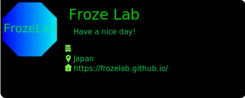

Github profile prompt
これ何？
Githubの自己紹介readmeに貼り付ける自己紹介カードのようなもの。
コマンドプロンプト(ターミナル)を意識して作った。OSSである。
だそうです。終わり
どうやって使うの？
githubのreadmeに、
を書いて保存すれば自分のカードが表示されているはずです。こんなもんです。
DEMO
https://github.com/rihitosan
Github
https://github.com/frozelab/github_profile_prompt